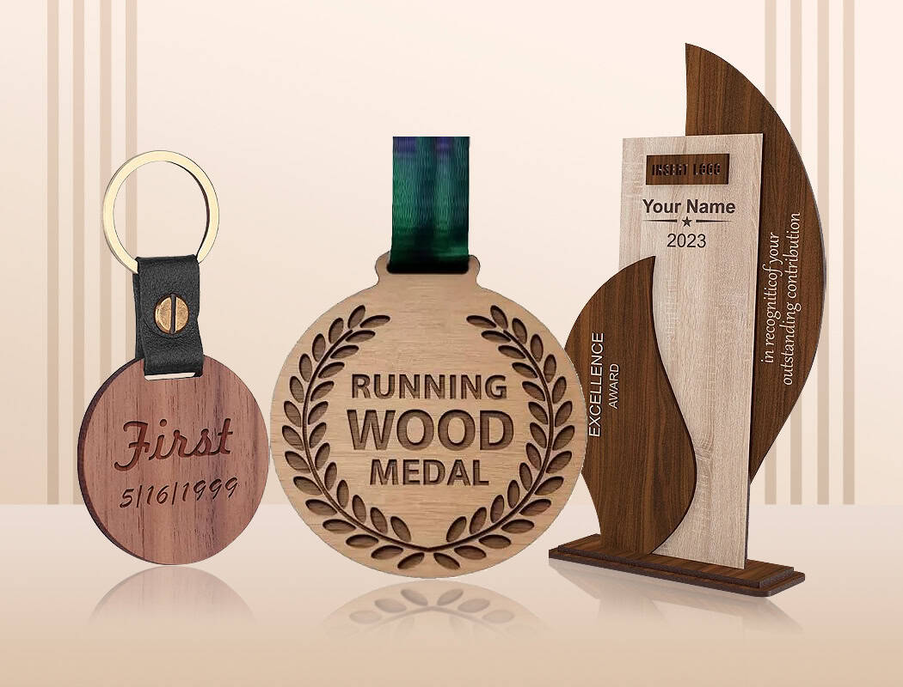

Leather & wood range皮革与木质系列Gama cuero y maderaGamme cuir et boisLeder- und HolzsortimentGamma pelle e legnoレザー・ウッド一覧가죽 & 우드 라인업تشكيلة الجلد والخشب

Leather Bag Tags
Genuine, PU or eco leather with debossed or foil-stamped logo.真皮、PU 或环保皮革，可压凹或烫金标识。Cuero genuino, PU o ecológico con logo grabado.Cuir véritable, PU ou écologique avec logo débossé ou marqué à chaud.Echt-, PU- oder Ökoleder mit tiefgeprägtem oder heißgeprägtem Logo.Pelle genuina, PU o ecologica con logo impresso o stampato a caldo.本革・PU・エコレザーに沈み込み加工または箔押しのロゴを施します。천연 가죽, PU 또는 친환경 가죽에 디보싱 또는 박 스탬핑 로고를 적용합니다.جلد طبيعي أو PU أو صديق للبيئة مع شعار غائر أو مختوم بالرقاقة المعدنية.

Leather Luggage Tags
Premium leather and wooden gifts with debossed, foil-stamped or laser-engraved branding高端皮革与木质礼品，支持压凹、烫金或激光雕刻品牌标识Regalos premium de cuero y madera con marca grabada, foil o láserCadeaux haut de gamme en cuir et bois, marquage à froid, dorure à chaud ou gravure laser.Hochwertige Leder- und Holzgeschenke mit Prägung, Heißfolienprägung oder Lasergravur.Regali premium in pelle e legno con stampa a secco, lamina a caldo o incisione laser.型押し・箔押し・レーザー刻印に対応する高級レザーと木製ギフト。음각, 박 스탬핑, 레이저 각인이 가능한 프리미엄 가죽 및 우드 선물.هدايا جلدية وخشبية فاخرة مع نقش غائر أو ختم رقائق معدنية أو حفر بالليزر.

Leather Keychains
Premium leather and wooden gifts with debossed, foil-stamped or laser-engraved branding高端皮革与木质礼品，支持压凹、烫金或激光雕刻品牌标识Regalos premium de cuero y madera con marca grabada, foil o láserCadeaux haut de gamme en cuir et bois, marquage à froid, dorure à chaud ou gravure laser.Hochwertige Leder- und Holzgeschenke mit Prägung, Heißfolienprägung oder Lasergravur.Regali premium in pelle e legno con stampa a secco, lamina a caldo o incisione laser.型押し・箔押し・レーザー刻印に対応する高級レザーと木製ギフト。음각, 박 스탬핑, 레이저 각인이 가능한 프리미엄 가죽 및 우드 선물.هدايا جلدية وخشبية فاخرة مع نقش غائر أو ختم رقائق معدنية أو حفر بالليزر.

Leather Key Fobs
Wide strap fobs with a riveted metal end cap.宽版皮坠配铆接金属端头。Colgantes anchos con terminal metálico remachado.Porte-clés à large sangle avec embout métallique riveté.Breite Bandschlüsselanhänger mit genieteter Metallkappe.Portachiavi a cinghia larga con terminale metallico rivettato.リベット留めの金属キャップ付きワイドストラップホルダー。리벳 고정 메탈 캡이 있는 와이드 스트랩 키홀더.حلقات مفاتيح بحزام عريض وطرف معدني مثبت بمسامير.

Leather Coasters
Premium leather and wooden gifts with debossed, foil-stamped or laser-engraved branding高端皮革与木质礼品，支持压凹、烫金或激光雕刻品牌标识Regalos premium de cuero y madera con marca grabada, foil o láserCadeaux haut de gamme en cuir et bois, marquage à froid, dorure à chaud ou gravure laser.Hochwertige Leder- und Holzgeschenke mit Prägung, Heißfolienprägung oder Lasergravur.Regali premium in pelle e legno con stampa a secco, lamina a caldo o incisione laser.型押し・箔押し・レーザー刻印に対応する高級レザーと木製ギフト。음각, 박 스탬핑, 레이저 각인이 가능한 프리미엄 가죽 및 우드 선물.هدايا جلدية وخشبية فاخرة مع نقش غائر أو ختم رقائق معدنية أو حفر بالليزر.

Leather Bookmarks
Premium leather and wooden gifts with debossed, foil-stamped or laser-engraved branding高端皮革与木质礼品，支持压凹、烫金或激光雕刻品牌标识Regalos premium de cuero y madera con marca grabada, foil o láserCadeaux haut de gamme en cuir et bois, marquage à froid, dorure à chaud ou gravure laser.Hochwertige Leder- und Holzgeschenke mit Prägung, Heißfolienprägung oder Lasergravur.Regali premium in pelle e legno con stampa a secco, lamina a caldo o incisione laser.型押し・箔押し・レーザー刻印に対応する高級レザーと木製ギフト。음각, 박 스탬핑, 레이저 각인이 가능한 프리미엄 가죽 및 우드 선물.هدايا جلدية وخشبية فاخرة مع نقش غائر أو ختم رقائق معدنية أو حفر بالليزر.
Leather Money Clips
Premium leather and wooden gifts with debossed, foil-stamped or laser-engraved branding高端皮革与木质礼品，支持压凹、烫金或激光雕刻品牌标识Regalos premium de cuero y madera con marca grabada, foil o láserCadeaux haut de gamme en cuir et bois, marquage à froid, dorure à chaud ou gravure laser.Hochwertige Leder- und Holzgeschenke mit Prägung, Heißfolienprägung oder Lasergravur.Regali premium in pelle e legno con stampa a secco, lamina a caldo o incisione laser.型押し・箔押し・レーザー刻印に対応する高級レザーと木製ギフト。음각, 박 스탬핑, 레이저 각인이 가능한 프리미엄 가죽 및 우드 선물.هدايا جلدية وخشبية فاخرة مع نقش غائر أو ختم رقائق معدنية أو حفر بالليزر.
Leather Bottle Openers
Stainless head riveted to a leather-wrapped handle.不锈钢头铆接在皮革包裹的握把上。Cabeza de acero remachada a mango forrado en cuero.Tête en acier inoxydable rivetée sur un manche gainé de cuir.Edelstahlkopf, auf einen lederumwickelten Griff genietet.Testa in acciaio inossidabile rivettata su un manico rivestito in pelle.レザー巻きハンドルにリベット固定したステンレスヘッド。가죽으로 감싼 손잡이에 리벳 고정한 스테인리스 헤드.رأس من الستانلس ستيل مثبت بمسامير على مقبض مغطى بالجلد.
Wooden Medals
Premium leather and wooden gifts with debossed, foil-stamped or laser-engraved branding高端皮革与木质礼品，支持压凹、烫金或激光雕刻品牌标识Regalos premium de cuero y madera con marca grabada, foil o láserCadeaux haut de gamme en cuir et bois, marquage à froid, dorure à chaud ou gravure laser.Hochwertige Leder- und Holzgeschenke mit Prägung, Heißfolienprägung oder Lasergravur.Regali premium in pelle e legno con stampa a secco, lamina a caldo o incisione laser.型押し・箔押し・レーザー刻印に対応する高級レザーと木製ギフト。음각, 박 스탬핑, 레이저 각인이 가능한 프리미엄 가죽 및 우드 선물.هدايا جلدية وخشبية فاخرة مع نقش غائر أو ختم رقائق معدنية أو حفر بالليزر.
Wooden Keychains
Premium leather and wooden gifts with debossed, foil-stamped or laser-engraved branding高端皮革与木质礼品，支持压凹、烫金或激光雕刻品牌标识Regalos premium de cuero y madera con marca grabada, foil o láserCadeaux haut de gamme en cuir et bois, marquage à froid, dorure à chaud ou gravure laser.Hochwertige Leder- und Holzgeschenke mit Prägung, Heißfolienprägung oder Lasergravur.Regali premium in pelle e legno con stampa a secco, lamina a caldo o incisione laser.型押し・箔押し・レーザー刻印に対応する高級レザーと木製ギフト。음각, 박 스탬핑, 레이저 각인이 가능한 프리미엄 가죽 및 우드 선물.هدايا جلدية وخشبية فاخرة مع نقش غائر أو ختم رقائق معدنية أو حفر بالليزر.
Wood Name Tags
Premium leather and wooden gifts with debossed, foil-stamped or laser-engraved branding高端皮革与木质礼品，支持压凹、烫金或激光雕刻品牌标识Regalos premium de cuero y madera con marca grabada, foil o láserCadeaux haut de gamme en cuir et bois, marquage à froid, dorure à chaud ou gravure laser.Hochwertige Leder- und Holzgeschenke mit Prägung, Heißfolienprägung oder Lasergravur.Regali premium in pelle e legno con stampa a secco, lamina a caldo o incisione laser.型押し・箔押し・レーザー刻印に対応する高級レザーと木製ギフト。음각, 박 스탬핑, 레이저 각인이 가능한 프리미엄 가죽 및 우드 선물.هدايا جلدية وخشبية فاخرة مع نقش غائر أو ختم رقائق معدنية أو حفر بالليزر.
Wooden Trophies
Premium leather and wooden gifts with debossed, foil-stamped or laser-engraved branding高端皮革与木质礼品，支持压凹、烫金或激光雕刻品牌标识Regalos premium de cuero y madera con marca grabada, foil o láserCadeaux haut de gamme en cuir et bois, marquage à froid, dorure à chaud ou gravure laser.Hochwertige Leder- und Holzgeschenke mit Prägung, Heißfolienprägung oder Lasergravur.Regali premium in pelle e legno con stampa a secco, lamina a caldo o incisione laser.型押し・箔押し・レーザー刻印に対応する高級レザーと木製ギフト。음각, 박 스탬핑, 레이저 각인이 가능한 프리미엄 가죽 및 우드 선물.هدايا جلدية وخشبية فاخرة مع نقش غائر أو ختم رقائق معدنية أو حفر بالليزر.

Wood Coasters
Premium leather and wooden gifts with debossed, foil-stamped or laser-engraved branding高端皮革与木质礼品，支持压凹、烫金或激光雕刻品牌标识Regalos premium de cuero y madera con marca grabada, foil o láserCadeaux haut de gamme en cuir et bois, marquage à froid, dorure à chaud ou gravure laser.Hochwertige Leder- und Holzgeschenke mit Prägung, Heißfolienprägung oder Lasergravur.Regali premium in pelle e legno con stampa a secco, lamina a caldo o incisione laser.型押し・箔押し・レーザー刻印に対応する高級レザーと木製ギフト。음각, 박 스탬핑, 레이저 각인이 가능한 프리미엄 가죽 및 우드 선물.هدايا جلدية وخشبية فاخرة مع نقش غائر أو ختم رقائق معدنية أو حفر بالليزر.